Progettiamo, realizziamo e manuteniamo infrastrutture di telecomunicazione, impianti tecnologici e soluzioni software per aziende ed enti pubblici.
Richiedi un preventivo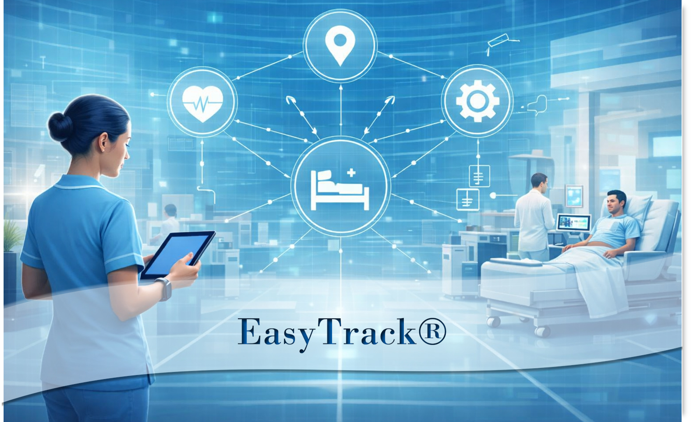
EasyTrack® è una soluzione tecnologica integrata e all’avanguardia, progettata per rivoluzionare il monitoraggio e la localizzazione in tempo reale all’interno delle strutture sanitarie.
La sua architettura modulare consente un’integrazione progressiva e flessibile, perfettamente allineata ai piani di sviluppo della struttura. Grazie a un sistema scalabile e interoperabile, EasyTrack® migliora l’efficienza operativa, la sicurezza e l’ottimizzazione dei processi, offrendo un vantaggio competitivo concreto all’organizzazione sanitaria e agli utenti finali.
Con un design replicabile e facilmente integrabile con i sistemi esistenti, la piattaforma assicura un rapido ritorno sull’investimento e un’esperienza utente superiore, ponendo le basi per una roadmap tecnologica sostenibile e in continua evoluzione.
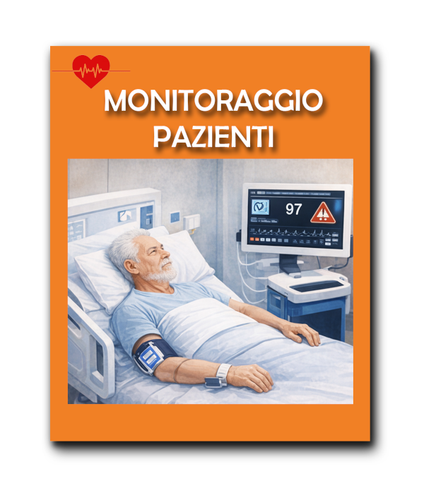
Dispositivi indossabili e sensori ambientali per rilevare condizioni critiche e comportamenti anomali.
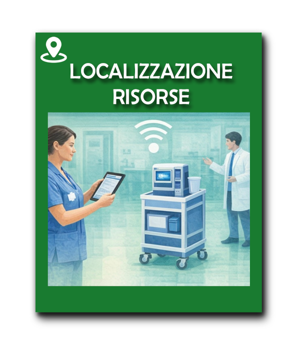
Tracciamento in tempo reale di attrezzature, asset mobili e personale.
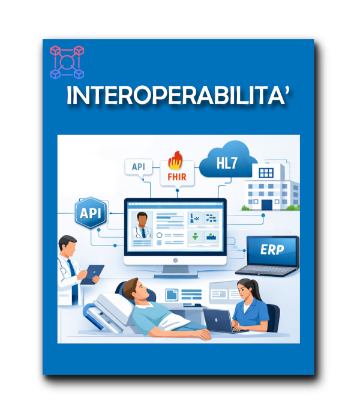
Integrazione con cartelle cliniche elettroniche, API sanitarie e software gestionali.
L’architettura di EasyTrack® si basa su un modello modulare e interoperabile, progettato per integrarsi in modo naturale con i sistemi informativi già presenti nella struttura sanitaria. Ogni componente è pensato per crescere progressivamente, garantendo scalabilità, continuità operativa e un’evoluzione tecnologica sostenibile.
Questa architettura consente alla struttura sanitaria di adottare EasyTrack® in modo progressivo, integrando moduli e funzionalità secondo priorità operative e piani di sviluppo, senza interruzioni dei servizi esistenti.
EasyTrack® si basa su un ecosistema tecnologico avanzato, progettato per garantire precisione, continuità operativa e integrazione nativa con le infrastrutture esistenti.
Dispositivi indossabili e ambientali per monitoraggio continuo.
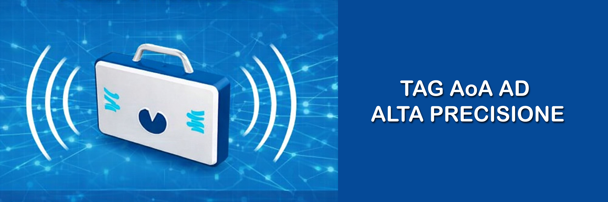
Localizzazione avanzata con accuratezza centimetrica.
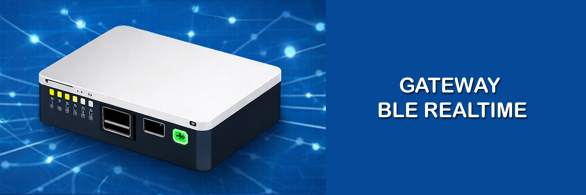
Raccolta dati in tempo reale con copertura estesa.
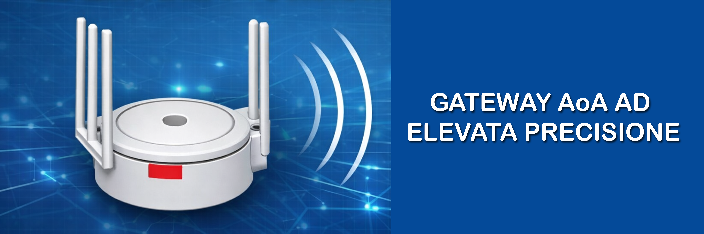
Infrastruttura dedicata alla localizzazione direzionale.
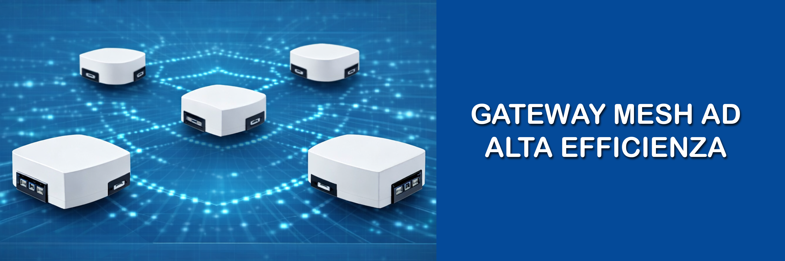
Rete distribuita per continuità operativa in ambienti complessi.
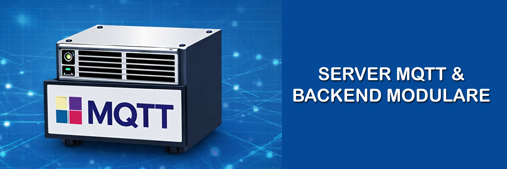
Architettura scalabile, sicura e interoperabile.
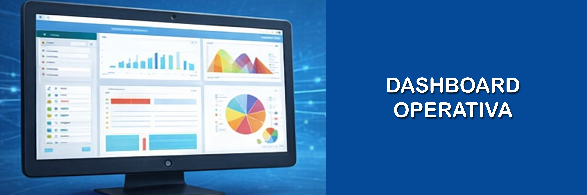
Monitoraggio centralizzato, gestione alert e analisi dei flussi.
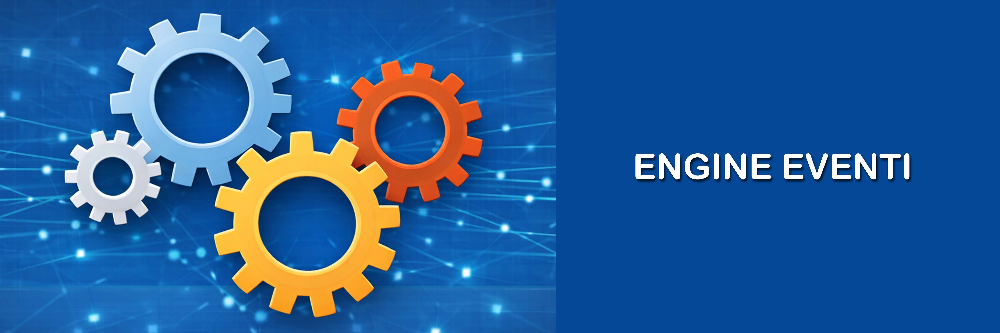
Logiche personalizzabili per classificazione e instradamento alert.
Supporto per automazione logistica e analisi predittiva.
EasyTrack® può essere adottato a partire da uno o più moduli fondamentali, attivabili in modo indipendente e progressivo. La piattaforma evolve con la crescita digitale della struttura, integrando nuovi moduli avanzati senza interrompere i servizi esistenti.
Rilevamento comportamenti a rischio, allontanamenti, cadute e accessi non autorizzati.
Tracciamento in tempo reale di attrezzature, asset mobili e personale.
Controllo accessi, permanenza e parametri ambientali.
Motore eventi centralizzato con logiche personalizzabili e notifiche multicanale.
Automazione dei processi di movimentazione e distribuzione.
Insight avanzati per decisioni proattive e ottimizzazione delle risorse.
Connessione fluida con cartelle cliniche elettroniche e sistemi sanitari.
Visualizzazione avanzata per una gestione più precisa degli spazi.
Interazione immediata e naturale per operatori e personale.
Aree di sicurezza configurabili in tempo reale.
Ogni modulo può essere attivato progressivamente, costruendo una roadmap tecnologica su misura che evolve con la struttura sanitaria e garantisce un investimento sostenibile nel tempo.
EasyTrack® può essere adottato a partire da uno o più moduli, in base alle priorità operative. La piattaforma è progettata per evolvere nel tempo, seguendo la crescita digitale della struttura e integrando nuovi moduli senza interrompere i servizi esistenti.
Si parte dai moduli più utili per le esigenze immediate.
I moduli aggiuntivi si integrano senza modifiche invasive.
La piattaforma si adatta alla maturità digitale della struttura.
Si cresce quando serve, ottimizzando costi e risorse.
EasyTrack® è progettato nel pieno rispetto delle normative vigenti in materia di sicurezza, privacy e gestione degli ambienti sanitari. La piattaforma garantisce un sistema conforme, affidabile e supportato da processi di formazione dedicati.
Il sistema cresce in modo progressivo, adattandosi ai piani di sviluppo della struttura sanitaria.
Riduzione dei tempi operativi, minimizzazione degli errori e miglioramento dei flussi di lavoro.
Integrazione fluida con software esistenti, cartelle cliniche elettroniche e API sanitarie.
AI e analytics predittivi trasformano i dati in insight utili per decisioni strategiche.
Interfacce vocali e strumenti digitali migliorano l'usabilità per tutti gli operatori.
Geofencing dinamico e monitoraggio continuo garantiscono protezione e prevenzione.
EasyTrack® può essere adottato in modo flessibile, in base alle esigenze operative e infrastrutturali della struttura sanitaria. Offriamo supporto completo: dalla sola fornitura software alla realizzazione chiavi in mano.
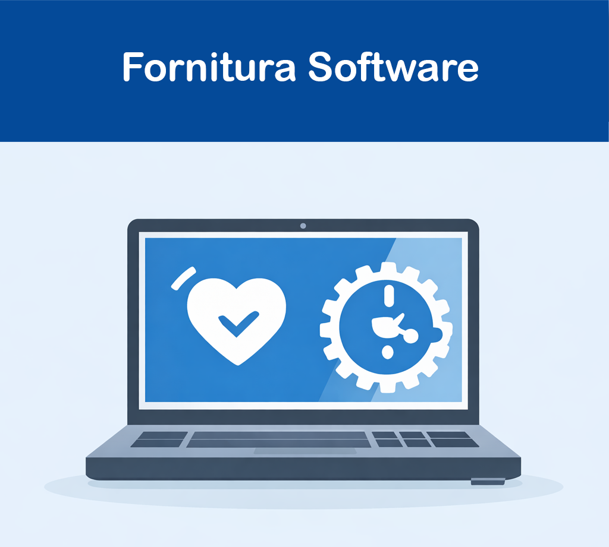
La piattaforma EasyTrack® può essere integrata direttamente nei sistemi esistenti, offrendo funzionalità avanzate senza interventi infrastrutturali.
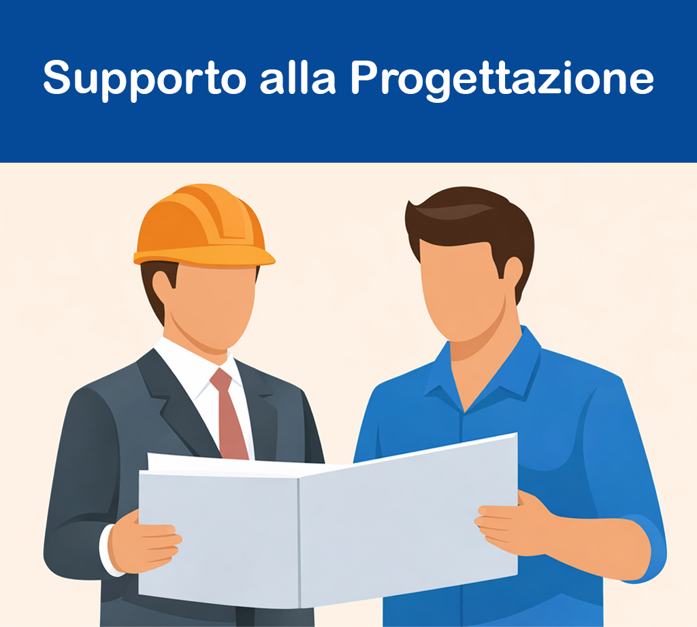
Affianchiamo la struttura sanitaria o l'impresa incaricata nella progettazione dell'infrastruttura, garantendo scelte tecnologiche corrette e un'implementazione coerente.
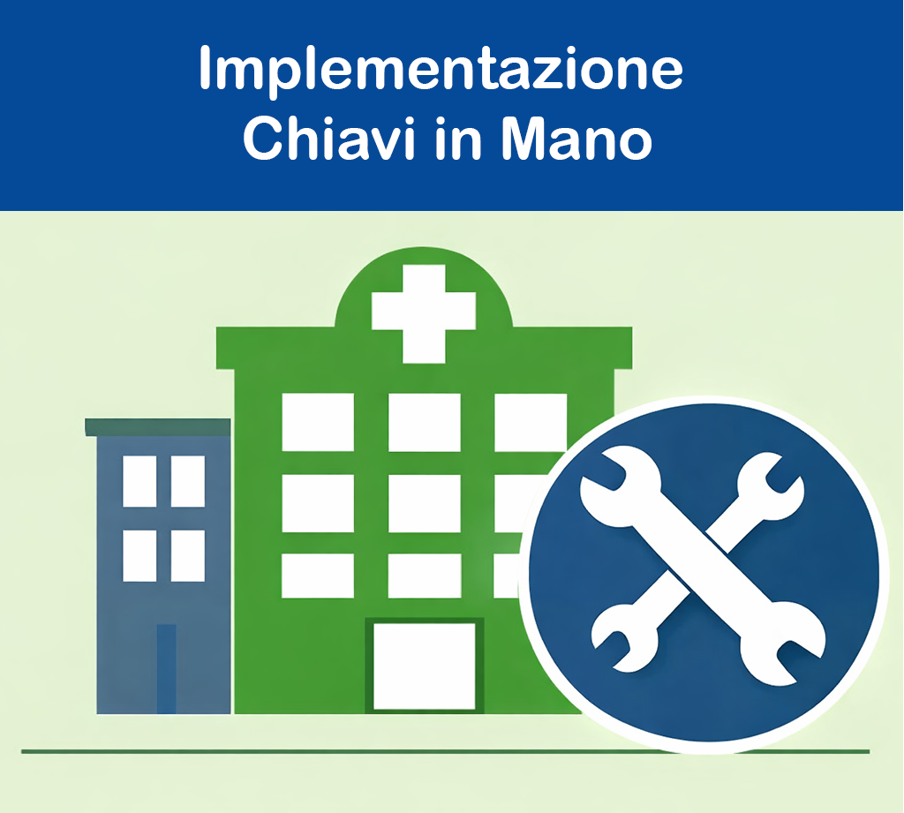
Realizziamo l'intera infrastruttura da zero: progettazione, installazione, configurazione e collaudo, assicurando un sistema completo, operativo e perfettamente integrato.